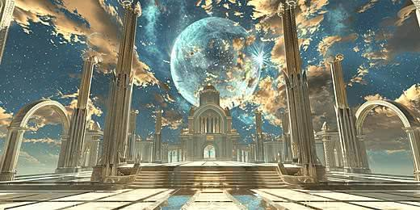

Chapter 2 : Penjaga Kristal
Keesokan harinya, Arka kembali ke hutan bersama Lumi. Mereka mencari tempat bernama Menara Langit, tempat untuk mengembalikan kekuatan Aether Crystal. Setelah berjalan cukup jauh, mereka menemukan sebuah menara tua yang tertutup tanaman. "Di sinilah tempatnya," kata Lumi. Arka memasuki menara dan melihat sebuah batu besar di tengah ruangan. Ia kemudian meletakkan Aether Crystal di atas batu tersebut.
Tiba-tiba, seluruh ruangan dipenuhi cahaya biru.
WHOOSH!
Angin berputar dengan cepat dan cahaya menyebar ke seluruh hutan. Pohon-pohon yang sebelumnya layu kembali menjadi hijau.Lumi tersenyum.
"Kau berhasil, Arka. Mulai hari ini, kau adalah penjaga baru Aetheria."Arka tersenyum dan melihat ke arah langit.
"Kalau begitu, petualanganku baru saja dimulai."Sejak hari itu, Arka dan Lumi menjadi penjaga Hutan Aetheria. Mereka siap menghadapi berbagai petualangan dan misteri yang menunggu di masa depan.

The End
back to chapter 1